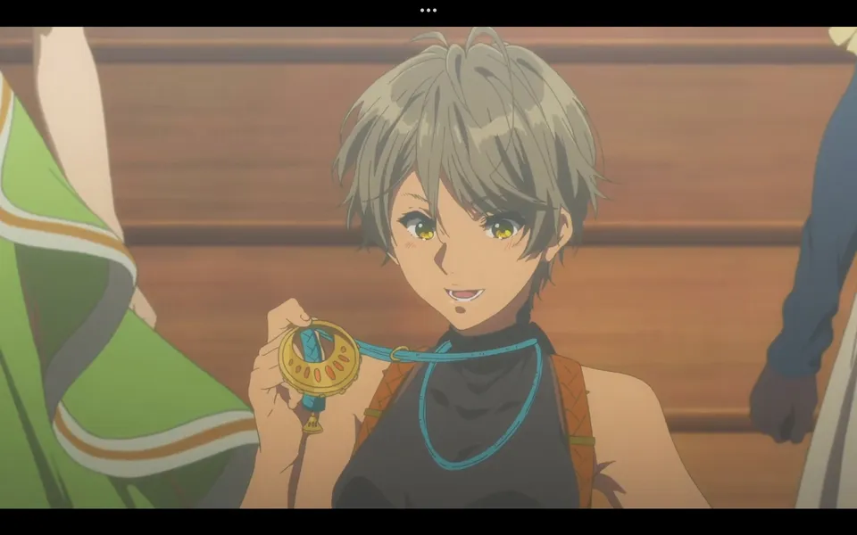
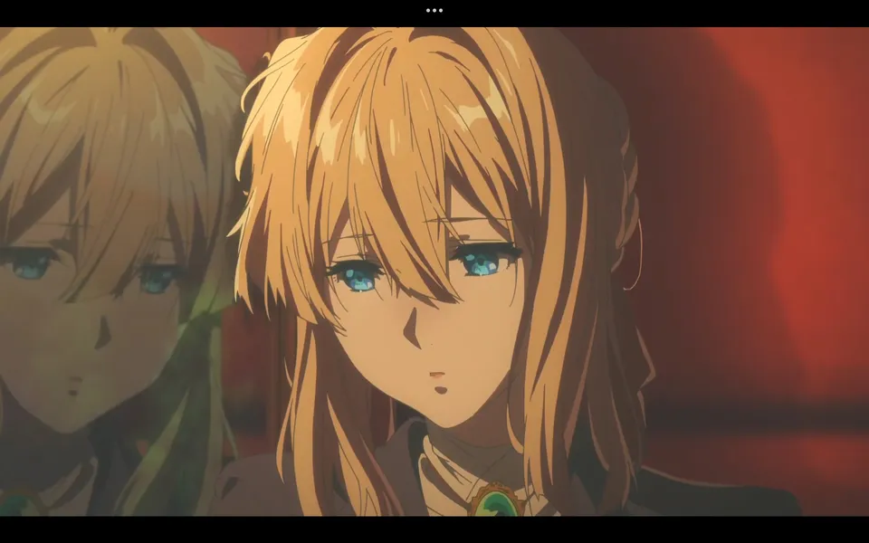
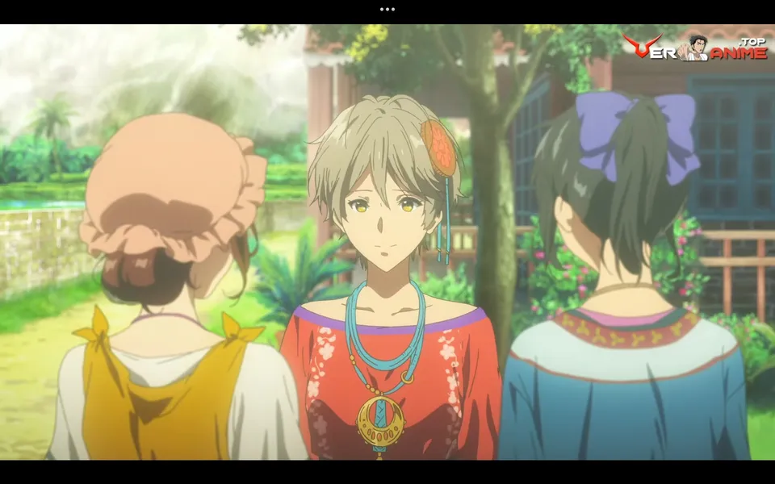
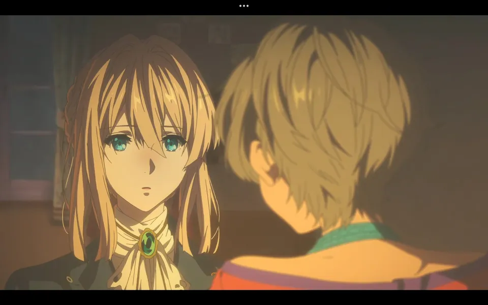

No serás una herramienta, sino una persona digna de ese nombre
En el cuarto capítulo, Violet se embarca en una misión que la lleva a su pasado. Acompañada por Iris, su compañera de trabajo, viaja al lugar donde nació para entregar una carta a una mujer desconocida. Sin embargo, pronto descubren que la destinataria de la carta es, nada más y nada menos, la madre de Violet. Este inesperado giro de los acontecimientos provoca en Violet una profunda confusión y la obliga a enfrentar sus miedos y dudas sobre su identidad. A pesar de la insistencia de Iris, Violet se niega inicialmente a entregar la carta, ya que va en contra de las reglas de la compañía y reaviva viejos traumas.
No obstante, la curiosidad y la presión de Iris la llevan a finalmente entregar la carta. El encuentro con su madre resulta ser un momento conmovedor y revelador, que marca un antes y un después en la vida de Violet. A través de esta experiencia, comienza a comprender el significado del amor maternal y a aceptar su pasado. Este capítulo es fundamental en el desarrollo de Violet como personaje, ya que la impulsa a buscar respuestas sobre su origen y a conectar con su humanidad de una manera más profunda.
Galeria



